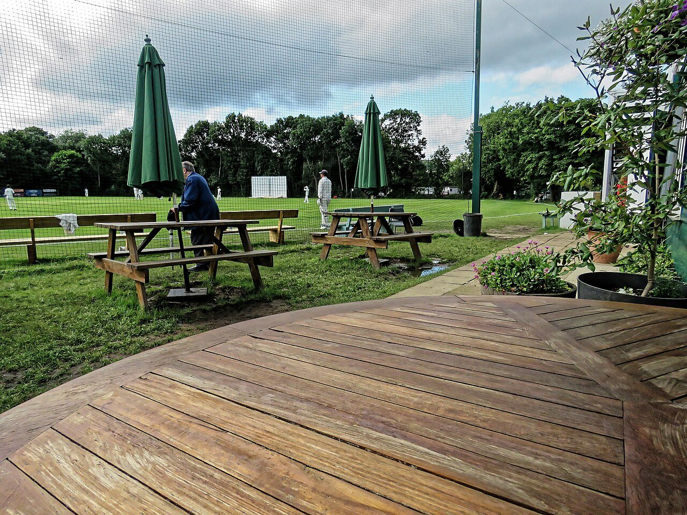

Starting over can make every interaction feel like it needs to become a friendship. It does not. Aim for repeat, low-pressure contact first: a familiar face at a class, a neighbor you see on the same walk, or someone who recognizes your order at a café.
Choose one place you can return to
Pick a public place that fits your real routine—a library, market, community garden, sports court, coffee shop, or dog park. Go at a similar time each week. You do not have to perform sociability; being a regular gives conversation more chances to happen naturally.

Join something that already matters to you
Look for a weekly language exchange, running club, book group, volunteer shift, art class, or local game night. Shared activity gives you a reason to see the same people again. If a group feels closed or uncomfortable, try another; one event is not a verdict on the whole city.
Keep invitations specific and easy
After a good conversation, suggest a short next step tied to what you discussed: “I’m going to the Saturday market—want to walk through for half an hour?” Specific plans are easier to answer. Give the other person room to say no and continue to be friendly either way.

A simple first-month rhythm
- Week one: choose two groups or places and attend once.
- Week two: return to the one that felt most comfortable.
- Week three: learn a few names and ask one person a follow-up question.
- Week four: suggest a short activity outside the group, if the interest feels mutual.
Adjust the pace to your time, energy, and budget. A smaller routine you enjoy is more useful than a packed calendar you dread.
Use apps to find a door, not to replace the room
Listings help you discover groups. Read the event details, check whether it is free or ticketed, and confirm the location with the organizer.
Meetup
Browse groups built around interests and local events.
Eventbrite
Find classes, talks, and public activities in the area.
Facebook
Search local groups and neighborhood events; check the group rules and organizers.
Discord
Join interest-based communities and look for public, locally organized meet-ups.
Explore current local listings
Check the current event details, accessibility, cost, and organizer before attending.
Let familiar places hold a few memories.
Met helps you notice the places and people around you, leave a note in participating venue Guest Books, and connect when both people choose to reveal.